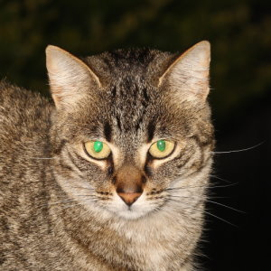

- HOME
- General
- Subdivision
- Looks
- Behaviour
- Senses
- Subspecies:
- Siberian tiger
- Bengal tiger
- Sumatran tiger
- Indochinese tiger
- South China tiger
- Caspian tiger
- Java tiger
- Bali tiger
- Hybrids:
- Liger
- Tigon
- Historisch:
- Saber tooth tiger
- Links


Relevant links:
-
Currently there are no relevant links available.
The vision
Because the tiger also lives during the night, his eyes are specially adapted to the dark. Thanks to these adaptations, a tiger needs 6 times less light to see the environment than we do. This means that even the light of the stars at night is enough for a tiger to be able to see what is going on in their environment.
Eyes contain photoreceptors. There are two types of photoreceptors: one type is to distinguish between light and dark and others that are sensitive to colours. In order to see enough at night, the tiger needs more of the first type than the second.
In order to make their night vision even better, they have a 'tapetum lucidum' or a 'carpet of light'. These are several layers that reflect the light, sending the light back through the retina, to shine a second time on the photoreceptors, which gives a much brighter image on the retina. The tapetum lucidum makes the eyes of a cat seem to be luminous at night.
Figure: a regular cat with a luminous tapetum lucidum.
A tiger’s eye is also adapted in order to be able to see horizontal movement better. This is possible because the concentration of nervecells in their eyes are bigger in the horizontal direction.
Because the eyes are placed frontal, they have a greater 3D-sight. This 3D-image is very important for accuracy.
Tigers also have an extra film between the inner corner of the eye and the lowest eyelid to keep the eye free of dust.